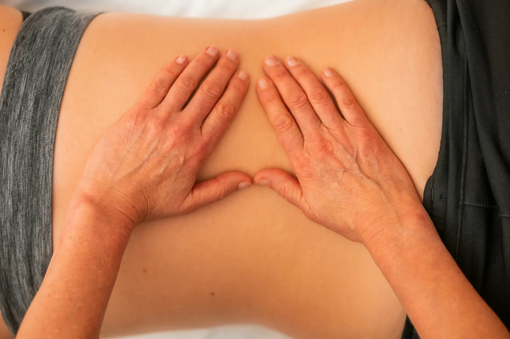
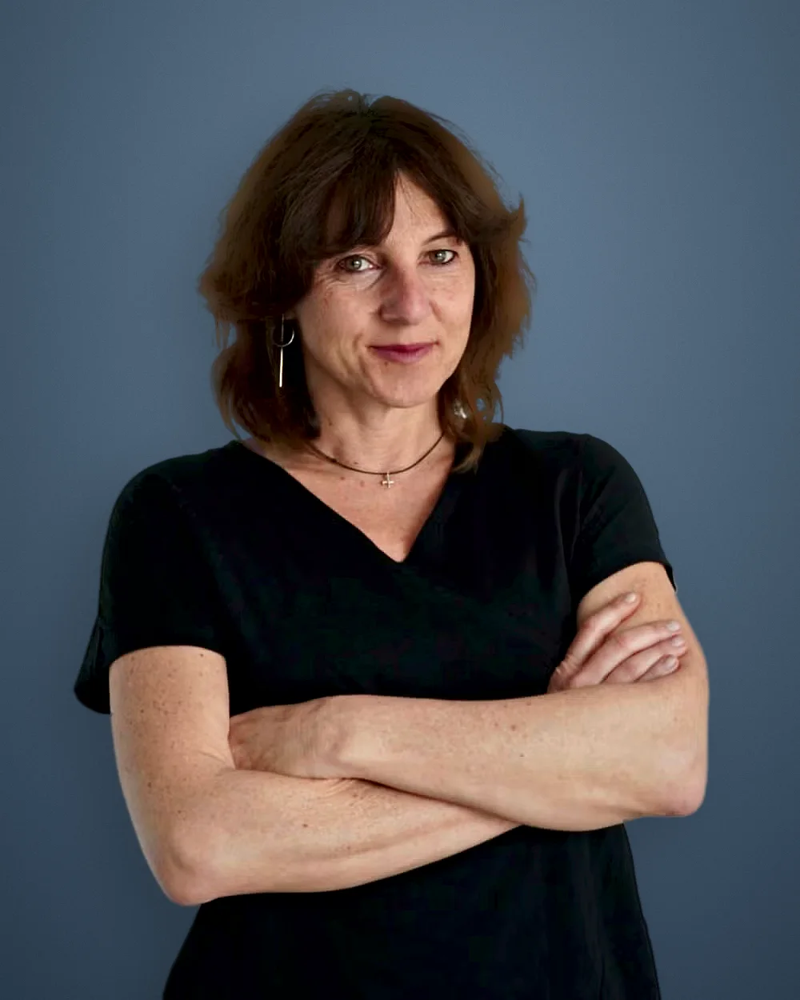

Osteópata en Palma de Mallorca
Soy Annachiara Villa. Trato dolor de espalda, cuello, bruxismo, problemas digestivos, cefaleas y bebés con osteopatía 100% manual, en el centro de Palma o a domicilio.
5,0 ★ en Google · Español, italiano e inglés
¿Qué te duele?
Estas son las molestias que más trato en la consulta. ¿No ves la tuya? Escríbeme y te digo si puedo ayudarte.
Dolor lumbar y ciática
Lumbalgias, hernias discales y dolor de cadera. Ver tratamiento →
Cuello y hombros
Cervicalgias, contracturas y periartritis del hombro. Ver tratamiento →
Bruxismo y mandíbula (ATM)
Dolor de cabeza o de dientes al despertar. Ver tratamiento →
Cefaleas, estrés y sueño
Terapia craneosacral y reflexología para descansar mejor. Ver tratamiento →
Problemas digestivos
Osteopatía visceral para gastritis, estreñimiento o hernia de hiato. Ver tratamiento →
Molestias menstruales
Trastornos ginecológicos y dolor lumbar asociado.
Esguinces y deporte
Tendinopatías y lesiones de ligamentos y menisco.
Bebés y niños
Osteopatía pediátrica con técnicas muy suaves. Ver tratamiento →
Bruxismo y dolor de mandíbula (ATM) en Palma
En Osteopatía Palma OsteoSpot ofrecemos un enfoque terapéutico especializado. A través de tratamientos específicos de osteopatía estructural, fascial, visceral, craneosacral y mandibular, logramos la liberación de la articulación.
¿Te despiertas con dolor de cabeza o dolor en los dientes? Estos síntomas suelen ser consecuencia del bruxismo (apretar los dientes por la noche), un problema muy común que afecta directamente a la articulación ATM.
Aplicamos técnicas avanzadas de estiramiento en las bandas musculares internas y externas de la boca. Este tratamiento alivia la tensión acumulada, reduce las migrañas y devuelve el bienestar a tu día a día.
¡Recupera tu bienestar y descansa sin dolor!

El cuerpo funciona como un todo
Una alteración en una zona puede causar dolor en otra. La osteopatía busca el origen del problema y lo trata con las manos, sin aparatos ni fármacos.
Combino osteopatía estructural, fascial, visceral, craneosacral y mandibular según lo que necesita cada persona.
Tu primera visita
- 1Escucho tu historia: síntomas, hábitos y lesiones anteriores.
- 2Valoro tu movilidad para encontrar el origen del problema.
- 3Tratamiento manual adaptado a ti, sin prisas.
- 4Te doy ejercicios para casa para que el efecto dure.
Ven con ropa cómoda. Si tienes informes o pruebas médicas, tráelos.
Precios claros desde el principio
Osteopatía
1 h 15 min · estructural, fascial o craneosacral
Osteopatía visceral
1 h 25 min · digestión y órganos internos
Reflexología podal
1 h 10 min
Masaje terapéutico
1 h 25 min · o 1 h 55 min por 105 €
Tratamientos a domicilio en Palma: pregunta el precio por WhatsApp.
Annachiara Villa, osteópata
Descubrí la complejidad del cuerpo humano a través de mis propias experiencias físicas. Hoy ayudo a otras personas a entender su cuerpo y a vivir mejor, respetando sus límites.
- Osteópata formada en Gaia Osteopathy School (Mallorca)
- Especialista en osteopatía infantil y visceral
- Reflexología craneal, podal y neuromuscular
- Terapia miofascial y digitopresión para artrosis
- Atiendo en español, italiano e inglés

★★★★★“Lo consiguió donde muchos otros médicos habían fallado con mis problemas intestinales.”
Paola A. · traducida del italiano
★★★★★“De viaje en Palma se despertó un viejo dolor de espalda. La consulta es preciosa, limpia y acogedora.”
Annalisa S. · traducida del italiano
★★★★★“Profesional muy buena y preparada. Me resolvió un problema muy molesto en el hombro.”
Valerio C.
Antes de tu cita
¿Necesito receta médica para ir al osteópata?
No. Puedes reservar directamente. Si tienes informes o pruebas médicas, tráelos a la primera visita.
¿Cuántas sesiones de osteopatía voy a necesitar?
Depende del problema. Después de la primera visita te digo qué espero y cada cuánto conviene volver.
¿Es normal notar molestias después de la sesión?
Puedes notar algo de cansancio o sensibilidad uno o dos días. Si tienes dudas, escríbeme.
¿Haces osteopatía a domicilio en Palma?
Sí, según disponibilidad. Escríbeme por WhatsApp indicando tu zona.
Reserva tu cita en Palma
Horario
| Lunes | 8:00–20:00 |
| Martes | 9:00–17:00 |
| Miércoles | 8:00–20:00 |
| Jueves | 9:00–20:00 |
| Viernes | 9:00–17:30 |
| Sábado | 9:30–17:30 |
| Domingo | Cerrado |